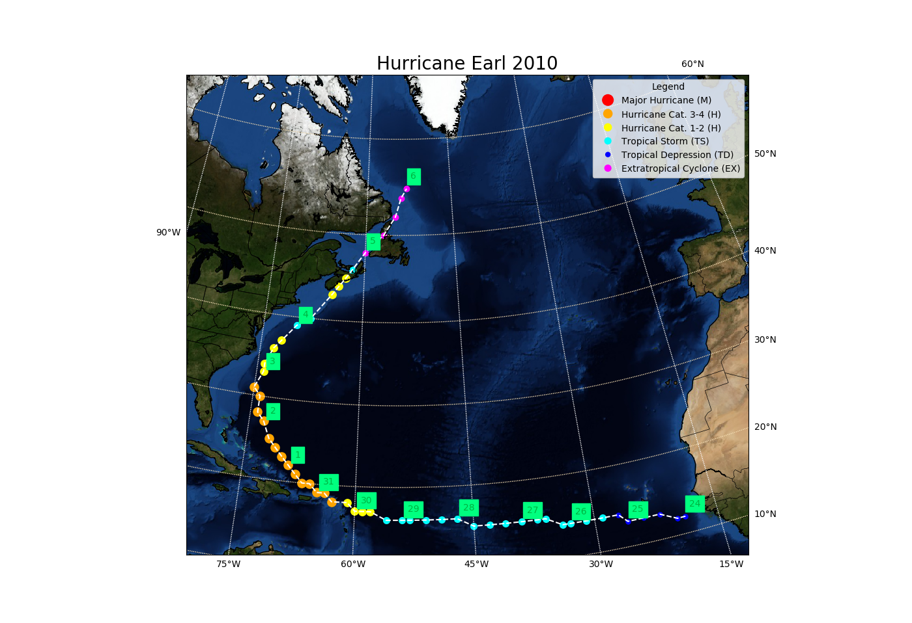

1. Plotting the track of a Tropical Cyclone¶
This example provides a map of the track of a particular tropical cyclone. The map gives a sense of the longevity of the storm and the strength across its path.
The first and foremost part of this example is the preamble. It is absolutely necessary that you have all these packages, in particular look out for Basemap!
# Basemap is a python-module to create accurate and stylish maps.
from mpl_toolkits.basemap import Basemap
# Numpy is our friend, it is the most important module.
import numpy as np
# Dates and time module
import datetime
# Patches is a secondary tool used to create the handles of the strength-legend.
import matplotlib.patches as mpatches
# Pandas, unlike the bear, is used by python to read-in databases, in this case for the track database.
import pandas as pd
# We import the function distance from our toolbox.
from toolbox import distance
# We import matplotlib, the graphing module tool of python. The abbreviation plt, as np and pd are used as conventional Python docs indicate.
import matplotlib.pyplot as plt
# trackhandles is an auxiliary script to create Handle Objects.
from trackhandles import *
After importing our modules, we make use of the function getrack which reads in the data and gets the track by returning longitude, latitude, windspeed and intensity every 6 h. This section uses the file track_w.csv which must have been provided to you.
# Get track function of storm and year.
def getrack(storm,year):
# we use pandas to read in the data as a Pandas.DataFrame. As pandas-convention dictates, df =dataframe is used as variable name for the object.
df=pd.read_csv('track_w.csv')
# We select the storm by also indicating the year. Storm names can be repeated!
df=df[(df['Storm Name']==storm.upper()) & (df['Year']==int(year))]
# Pandas DataFrame use indexes, which are useful as they sort our data by date.
df.index=df['Datetime']
# Convert index to datetime-objects
df.index=pd.to_datetime(df.index)
# empty lists to be filled with values of the track.
latitudes=[]
longitudes=[]
windspeeds=[]
Intensity_label=[]
# Iterate over the dates in the pandas dataframe index
for date in df.index:
# Select values for current date.
values=df.loc[date]
# Append-paste to lists
latitudes.append(float(values['Latitude'][0:4]))
longitudes.append(-float(values['Longitude'][1:5]))
windspeeds.append(float(values['windspeed']))
Intensity_label.append(values['Intensity'])
# Return track records.
return longitudes,latitudes,windspeeds,Intensity_label,df.index
After obtaining the track from the best track datafile, plotting occurs through the next function plotrack. This function is called by the main script if you decide to plot the track but it can be used as a standalone if you input the storm and year.
def plotrack(storm,year):
# Call getrack function and allocate variable names
lon,lat,speedvec,intensity,dates=getrack(storm,year)
# Determine map size according to how the track is distributed
if np.std(lon)>np.std(lat):
legend_location=(0.5,-0.015)
columns=3
plt.figure(figsize=(17,14))
else:
legend_location=(1.05, 1)
columns=1
plt.figure(figsize=(14,12))
# Create basemap object depending on track parameters of latitude and longitude.
m = Basemap(llcrnrlon=np.nanmin(lon)-5,llcrnrlat=np.nanmin(lat)-2.5,urcrnrlon=np.nanmax(lon)+2.*np.std(lon),urcrnrlat=np.nanmax(lat)+2.5,
projection='lcc',lon_0=np.mean(lon),lat_0=np.mean(lat),
resolution ='l',area_thresh=1000.)
# Basemap style to draw coastlines, countries and states (important if looking at high-impact storms)
m.bluemarble()
m.drawcoastlines()
m.drawcountries()
m.drawstates()
# Drawing parallels and meridians with certain 10 and 15 degrees spacing, respectively.
parallels = np.arange(0.,81,10.)
m.drawparallels(parallels,labels=[False,True,True,False],color='wheat')
meridians = np.arange(0.,351.,15.)
m.drawmeridians(meridians,labels=[True,False,False,True],color='white')
# Status will be part of the final title of this plot, Tropical Cyclones are named usually after their strongest status, Hurricane, Tropical Storm and so on.
status=''
# Daylist is the actual days that this storm lasted. The following loop will fill it with all the days with a track value.
daylist=[]
# Iterate over the speed array, it could easily be longitude or latitude since they are the same length but you can tell why this makes things easier.
for index,speed in enumerate(speedvec):
# The following ifs determine the color and size of the marker in the plot, according to the legend.
# Funny enough, first we define the marker colors and it is until the end of the loop that we determine the legend
# In this category are Tropical Storms
if speed > 34 and speed < 64:
dotcolor='aqua'
size=6.5
if status!="Hurricane":
status="Tropical Storm"
# Here are Hurricanes.
elif speed >=64:
status='Hurricane'
# Distinguish light-strong-major Hurricanes.
if speed <82:
#Light hurricanes.
dotcolor='yellow'
size=9
elif speed >= 82 and speed <112:
# Strong hurricanes.
dotcolor='orange'
size=12
elif speed >= 112:
# Major Hurricanes.
dotcolor='red'
size=18
else:
# If it was too weak, it was probably a depression.
if status!="Hurricane" and status!="Tropical Storm":
status="Tropical Depression"
dotcolor='blue'
size=3.5
# A final color change might apply if the storm is categorized with the label "EX"
# as such, we set up a different color
if intensity[index]==' EX':
dotcolor='magenta'
size=5
# Plot the marker with the specified color and size on the proper coordinates.
m.scatter(m(lon[index],lat[index])[0],m(lon[index],lat[index])[1],s=size*7.5,c=dotcolor)
# Add dates to daylist if they are not already in there and plot them.
if dates[index].day not in daylist:
daylist.append(dates[index].day)
plt.text(m(lon[index]+.75,lat[index]+1.25)[0],m(lon[index]+.75,lat[index]+1.25)[1],dates[index].day,color='darkgreen',fontsize=10,backgroundcolor='lime')
# We also overlay a white dotted line on the track.
m.plot(m(lon,lat)[0],m(lon,lat)[1],'--',color='white')
# Add title.
plt.title(status+' '+storm+' '+year,fontsize=20)
# Adding the legend object, use of handle package and Handle Objects. Each "dummy handle" is associated with their respective handle (which plots the marker color).
plt.legend([MObject(),Hurricane3Object(),Hurricane1Object(),TSObject,TDObject,EXObject], ["Major Hurricane (M)","Hurricane Cat. 3-4 (H)","Hurricane Cat. 1-2 (H)","Tropical Storm (TS)","Tropical Depression (TD)","Extratropical Cyclone (EX)"]
,handler_map={MObject: MajorHurricaneObjectHandler(),Hurricane3Object: Hurricane3ObjectHandler(),Hurricane1Object: Hurricane1ObjectHandler(),TSObject: TSObjectHandler(),TDObject: TDObjectHandler(),EXObject: EXObjectHandler()},
title="Legend",bbox_to_anchor=legend_location,ncol=columns)
# Show final product.
plt.show()
1.1. Expected plot for Earl, 2010:¶
A way you might use this code as a stand-alone script is:
from plotrack import *
plotrack("Isabel","2003")